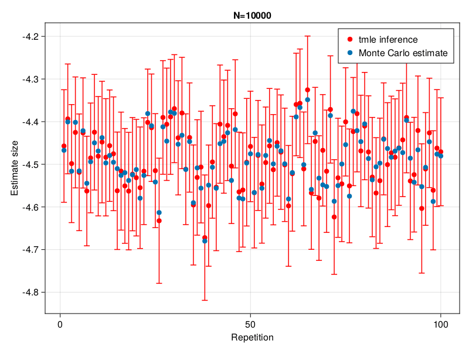

Model Misspecification & Double Robustness
In this example we illustrate the double robustness property of TMLE in the classical backdoor adjustment setting for the Average Treatment Effect.
Let's consider the following simple data generating process:
\[\begin{aligned} W \sim \mathcal{N}(0, 1) \\ T \sim \mathcal{B}(\frac{1}{1 + e^{-(0.3 - 0.5 \cdot W)}}) \\ Y \sim \mathcal{N}(e^{1 - 10 \cdot T + W}, 1) \end{aligned}\]
using TMLE
using MLJ
using Distributions
using StableRNGs
using LogExpFunctions
using MLJGLMInterface
using DataFrames
using CairoMakie
μY(T, W) = exp.(1 .- 10T .+ 1W)
function generate_data(;n = 1000, rng = StableRNG(123))
W = rand(rng, Normal(), n)
μT = logistic.(0.3 .- 0.5W)
T = float(rand(rng, n) .< μT)
ϵ = rand(rng, Normal(), n)
Y = μY(T, W) .+ ϵ
Y₁ = μY(ones(n), W) .+ ϵ
Y₀ = μY(zeros(n), W) .+ ϵ
return DataFrame(
W = W,
T = T,
Tcat = categorical(T),
Y = Y,
Y₁ = Y₁,
Y₀ = Y₀
)
end
function plotY(data)
fig = Figure()
ax = Axis(fig[1, 1], xlabel="W", ylabel="Y")
for (key, group) in pairs(groupby(data, :T))
scatter!(ax, group.Y, group.W, label=string("T=",key.T))
end
axislegend()
return fig
end
data = generate_data(;n = 1000, rng = StableRNG(123))
plotY(data)Y is thus a non linear function of T and W. Despite the simplicity of the example, it is difficult to find a closed form solution for the true Average Causal Effect. However, since we know the generating process, we can approximate it using a Monte-Carlo approximation. In the next two sections, we compare Linear inference and TMLE and see how well they cover this Monte-Carlo approximation.
Estimation using a Linear model
We first propose to estimate the effect size using the classic linear inference method. Because our model does not contain the data generating process (and is hence mis-specified), there is no guarantee that the true effect size will be covered by our confidence interval. In fact, as the sample size grows, the confidence interval will inevitably shrink and fail to cover the ground truth. This can be seen from the following animation:
function linear_inference(data)
mach = machine(LinearRegressor(), data[!, [:W, :T]], data.Y)
fit!(mach, verbosity=0)
coeftable = report(mach).coef_table
Trow = findfirst(x -> x == "T", coeftable.rownms)
coef = coeftable.cols[1][Trow]
lb = coeftable.cols[end - 1][Trow]
ub = coeftable.cols[end][Trow]
return (coef, lb, ub)
end
function repeat_inference(inference_method; n=1000, K=100)
estimates = Vector{Float64}(undef, K)
errors = Vector{Float64}(undef, K)
mcestimates = Vector{Float64}(undef, K)
for k in 1:K
data = generate_data(;n=n, rng=StableRNG(k))
est, lb, ub = inference_method(data)
estimates[k] = est
errors[k] = ub - est
mcestimates[k] = mean(data.Y₁ .- data.Y₀)
end
return estimates, errors, mcestimates
end
function plot_coverage(inference_method; n=1000, K=100)
fig = Figure()
title = Observable(string("N=", n))
ax = Axis(fig[1, 1], xlabel="Repetition", ylabel="Estimate size", title=title)
ks = 1:K
estimates, errors, mcestimates = repeat_inference(inference_method; n=n, K=K)
estimates = Observable(estimates)
errors = Observable(errors)
mcestimates = Observable(mcestimates)
errorbars!(ax, ks, estimates, errors, color=:red, whiskerwidth = 10)
scatter!(ax, ks, estimates, color=:red, label=replace(string(inference_method), "_" => " "))
scatter!(ax, ks, mcestimates, label="Monte Carlo estimate")
axislegend()
return fig, estimates, errors, mcestimates, title
end
function update_observables!(estimates, errors, mcestimates, title, inference_method; n=1000, K=100)
newestimates, newerrors, newmcestimates = repeat_inference(inference_method; n=n, K=K)
estimates[] = newestimates
errors[] = newerrors
mcestimates[] = newmcestimates
title[] = string("N=", n)
end
function make_animation(inference_method)
Ns = [10_000, 25_000, 50_000, 75_000, 100_000, 250_000, 500_000]
fig, estimates, errors, mcestimates, title = plot_coverage(inference_method; n=10_000, K=100)
record(fig, "$(inference_method).gif", Ns; framerate = 1) do n
update_observables!(estimates, errors, mcestimates, title, inference_method; n=n, K=100)
end
end
make_animation(linear_inference)"linear_inference.gif"
Estimation using TMLE
To solve this issue, we will now use TMLE to estimate the Average Treatment Effect. We will keep the mis-specified linear model to estimate E[Y|T,W] but will estimate p(T|W) with a logistic regression which turns out to be the true generating model in this case. Because TMLE is double robust we see that we now have full coverage of the ground truth.
function tmle_inference(data)
Ψ = ATE(
outcome=:Y,
treatment_values=(Tcat=(case=1.0, control=0.0),),
treatment_confounders=(Tcat=[:W],)
)
models = (Y=with_encoder(LinearRegressor()), Tcat=LinearBinaryClassifier())
tmle = TMLEE(models=models)
result, _ = tmle(Ψ, data; verbosity=0)
lb, ub = confint(OneSampleTTest(result))
return (TMLE.estimate(result), lb, ub)
end
make_animation(tmle_inference)"tmle_inference.gif"
This page was generated using Literate.jl.